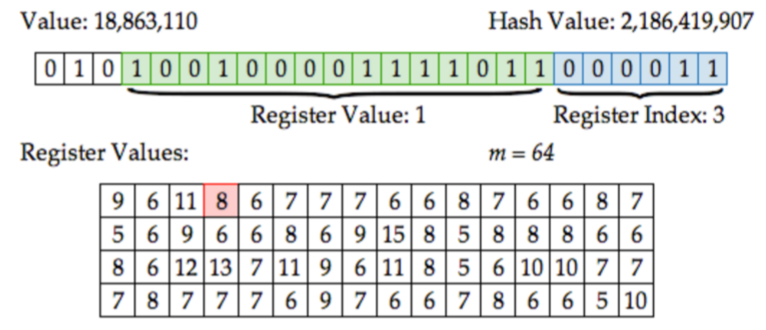
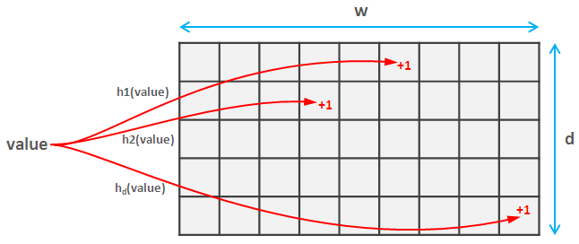

chris@datascience.com
Presenter Notes
Statistical analysis and mining of huge multi-terabyte data sets is a common task nowadays, especially in the areas like App analytics and Internet advertising. Analysis of such large data sets often requires powerful distributed data stores and heavy data processing with techniques like MapReduce.
This approach often leads to heavyweight high-latency analytical processes and poor applicability to realtime use cases. On the other hand, when one is interested only in simple additive metrics like total page views or average price of conversion, it is obvious that raw data can be efficiently summarized, for example, on a daily basis or using simple in-stream counters. Computation of more advanced metrics like a number of unique visitor or most frequent items is more challenging and requires a lot of resources if implemented straightforwardly.
This talk provides an overview of probabilistic data structures that allow one to estimate these and many other metrics and trade precision of the estimations for the memory consumption. These data structures can be used both as temporary data accumulators in query processing procedures and, perhaps more important, as a compact replacement of raw data in stream-based computing.
Monoids
Presenter Notes
Associativity
For all $ a, b, c \in M $ we have: $$ $$ $$ (a + b) + c = a + (b + c) $$
Presenter Notes
Associativity allows for MapReduce parallelism in computing.
$$ (a + b) + (c + d) + (e + f) + (g + h) $$ $$ (a + b + c + d) + (e + f + g + h) $$ $$ (a + b + c + d + e + f + g + h) $$
Lack of associativity increases latency exponentially.
Presenter Notes
Identity
There exists an element $0$ such that for all $a \in M$ $$ $$ $$ 0 + a = a + 0 = a $$
Presenter Notes
Identity allows for noops and null values in the data. $$ $$ $$ 0 + a + 0 + 0 + b + 0 + c + 0 + 0 = a + b + c $$
Presenter Notes
Basic Monoids
- addition, multiplication, concatenation, etc
- set union / intersection
- hashmaps
- Boolean AND / OR
- min / max
Presenter Notes
scala> val data2 = Map(1 -> 1, 2 -> 1)
data2: Map[Int,Int] = Map(1 -> 1, 2 -> 1)
scala> val data1 = Map(1 -> 3, 2 -> 5, 3 -> 7)
data1: Map[Int,Int] = Map(1 -> 3, 2 -> 5, 3 -> 7)
scala> data1 + data2
error: type mismatch
Presenter Notes
scala> import com.twitter.algebird.Operators._
scala> Map(1 -> 2, 2 -> 1) + Map(1 -> 3, 3 -> 5)
res0: Map[Int,Int] = Map(1 -> 5, 3 -> 5, 2 -> 1)
scala> Map(1 -> 2, 2 -> 1) * Map(1 -> 3, 3 -> 5)
res1: Map[Int,Int] = Map(1 -> 6)
Note the effect of the multiplication
Presenter Notes
scala> Map(1 -> Set(2,3), 2 -> Set(1)) + Map(2 -> Set(1,2,3))
res2: Map[Int,Set[Int]] = Map(1 -> Set(2, 3), 2 -> Set(1, 2, 3))
Presenter Notes
What about a mean average?
avg(0, 1, 2, 3, 4) != avg(0 ,1, 2) + avg(3, 4)
2 != 1 + 3.5
Presenter Notes
Use a Product Monoid
(a.cnt, a.avg) + (b.cnt, b.avg) =
( a.cnt + b.cnt, (a.cnt*a.avg + b.cnt*b.avg)/(a.cnt + b.cnt))
Presenter Notes
scala> AveragedValue(3,(0+1+2)/3.0) + AveragedValue(2,(3+4)/2.0)
res3: AveragedValue = AveragedValue(5,2.0)
Presenter Notes
Product Monoids
- mean + higher moments (variance, skewness etc)
- harmonic mean
- median (Q-Digest)
- mode (Count-min sketch)
- probabilistic data structures (HyperLogLog, Bloom Filters etc)
Hashing vs Sampling
Presenter Notes

Presenter Notes
Algebird
An Abstract Algebra library from Twitter for solving large "counting" problems
- Abstract algebraic types (e.g. semigroups, monoids etc)
- Monoid interfaces for standard Scala types
- Bloom Filter, HyperLogLog, Count-min Sketch, ARIMA, Q-Digests etc
- Aggregation of complex data structures with Spark can be expressed as a simple MapReduce:
rdd.map(toMonoid(_)).reduce(_+_)
Presenter Notes
Bloom Filter
Problem: Show new Tinder profiles without repeating profiles that have already been swiped on.
Tinder has over 50 million active monthly users averaging over 1.6 billion swipes per day.
Storing the swiped graph as a Set[(User,Profile)] or a Map[User,Set[Profile]] would be prohibitively expensive.
The Bloom Filter is probably the most famous and widely used probabilistic data structure. It is widely used as a preliminary probabilistic test that allows one to reduce a number of exact checks.
Presenter Notes
- Like an approximate
Set Bloom.contains(Profile) => Maybe | No- Precision < 1.0 (P(false positive) > 0)
- Recall = 1.0 (P(false negative = 0))
Presenter Notes
Under the hood: k hashes into an m-bit array.

We can tune Precision with m and k.
Presenter Notes
Precision Tuning
After $n$ insertions, the probability that a given bit is not set to 1 by any of the $k$ hash functions is
$$ \left(1-\frac{1}{m}\right)^{kn} $$
Therefore the probability of a false positive is:
$$ \left(1-\left[1-\frac{1}{m}\right]^{kn}\right)^k \approx \left( 1-e^{-kn/m} \right)^k $$
Presenter Notes
The false positive probability p as a function of number of elements $n$ in the filter and the filter size $m$, assuming an optimal number of hash functions $k= (m/n) \ln 2$ (Wikipedia)

Presenter Notes
Bloom Filters are Monoids
Write: OR at each location
$$
$$
Read: AND at each location
Presenter Notes
val NUM_HASHES = 6
val WIDTH = 32
val SEED = 1
val bfMonoid = new BloomFilterMonoid(NUM_HASHES, WIDTH, SEED)
val bf1 = bfMonoid.create("1", "2", "3", "4", "100")
val bf2 = bfMonoid.create("4", "5", "100", "110")
Presenter Notes
scala> bf1.contains("1")
res4: ApproximateBoolean = ApproximateBoolean(true,0.92903497)
scala> bf1 ++ bf2
res5: com.twitter.algebird.BF = BFSparse(...)
Presenter Notes
HyperLogLog
Problem: Count the number of unique Tinder users that have seen a profile.
Again, Tinder users swipe through 1.6 billion profiles per day.
Presenter Notes
- Like an approximate
Set HLL.size => Approx[Number]- We know the distribution on the error
Presenter Notes
Link

Presenter Notes
Write: MAX at each location
$$
$$
Read: Harmonic mean over all cells
Presenter Notes
import HyperLogLog._
def uniqueVals(sc:SparkContext, csv:String, col:Int): Long = {
val hll = new HyperLogLogMonoid(12) // 2^12 bits
val rdd: RDD[Row] = SparkUtils.rddFromCSVFile(sc, csv, false)
val approxCount = rdd
.map {r => r(col).toString}
.map {c => hll(c.hashCode)} // hll defines zero and plus
.reduce(_ + _)
approxCount.estimatedSize.toLong
}
Presenter Notes
Count-min Sketch
Problem: How many swipes did each active user make on each hour this month?
50,000,000 users * 24 hours / day * 31 days / month = 37 billion (user, hour) pairs to aggregate.
Suppose there is a set of values with duplicates, it is required to estimate frequency (a number of duplicates) for each value. Estimations for relatively rare values can be imprecise, but frequent values and their absolute frequencies should be determined accurately.
Presenter Notes
- Like an approximate
Map[Profile, Number]. CMS.get(profile) => Approx[Number]- Always returns an upper bound
- We know the distribution on the error
Count-Min sketches are a family of memory efficient data structures that allow one to estimate frequency-related properties of the data set, e.g. estimate frequencies of particular elements, find top-K frequent elements, perform range queries (where the goal is to find the sum of frequencies of elements within a range), estimate percentiles.
Presenter Notes

Presenter Notes
Write: Numeric SUM at each location
$$
$$
Read: MIN over all keys matching output
Presenter Notes
import com.twitter.algebird.CMSHasherImplicits._
def histogram(sc: SparkContext, csv: String, col: Int) = {
val rdd:RDD[Row] = SparkUtils.rddFromCSVFile(sc, csv, false)
val cmsMonoid: CMSMonoid[String] = {
val eps = 0.001
val delta = 1E-10
val seed = 1
CMS.monoid[String](eps,delta,seed)
}
val cms = rdd
.map{r => r(col).toString}
.map{cmsMonoid.create(_)} // CMSItem monoid
.reduce(_ ++ _) // CMSInstance monoid
(x:String) => { cms.frequency(x).estimate }
}
Presenter Notes
Probabilistic Data Structures
$$ $$
| Exact | Use Case | Hashes | Write Monoid | Read Monoid | ||
|---|---|---|---|---|---|---|
| Bloom Filter | Set | Set membership | $k$ hashes into $\{0,1\}^m$ | Boolean OR | Boolean AND | |
| HyperLogLog | Set | Set cardinality | 1 hash into $\mathbb{N}^m$ | Numeric MAX | Harmonic MEAN | |
| CountMin Sketch | Map | Frequency count | $k$ hashes into $\mathbb{N}^m$ | Numeric SUM | Numeric MIN | |
Presenter Notes
- All use hasing to prepare some array
- Values are ordered (support < and >)
- Resulting monoids are commutative
Presenter Notes
Hashing vs Sampling
- Hash sketches have well-known approximation error distributions and are easy to parallelize.
- Unbiased samples of large data sets have unique sampling error distributions and still require touching every locale.
Presenter Notes
Algebird
- http://twitter.github.io/algebird
- Implementations of all the monoids here, plus many more.
Presenter Notes
Monoids have deep connections with
- category theory (Monoids are equivalent to single object categories)
- regular expressions (syntactic monoids, Kleene's algorithm and the Star height problem)
- computational aspects of concurrency (trace and history monoids, Git patch algebra)
Presenter Notes
The End
Special thanks to Oscar Boykin and Judah Jacobson